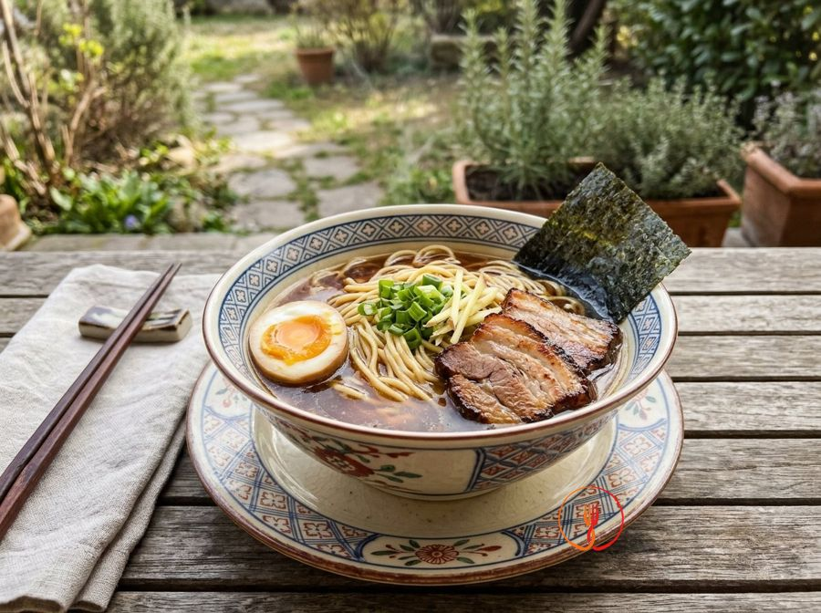

Shoyu ramen
Japanese soy sauce-based broth with noodles and marinated egg.
A steaming bowl of Shoyu ramen offers a perfect balance between the saltiness of soy sauce and the richness of chicken broth. An iconic Japanese dish, topped with seared pork belly and marinated eggs with a jammy yolk.
Ingredients
- Ramen noodles (fresh or pre-cooked)300 g
- Unsalted chicken broth900 ml
- Soy sauce60 ml
- Medium eggs2
- Fresh scallions30 g
- Fresh ginger20 g
- Nori seaweed2 small sheets
- Pork belly (thickly sliced)200 g
- Mirin (optional for marinade)20 ml
- Granulated sugar5 g
- Fine salt2 g
Allergens
Gluten, Soy, Eggs
May contain traces of: Celery, Sulphites.
Method
- Bring water to a boil and cook the eggs for exactly 6 minutes and 30 seconds. Immediately transfer to an ice bath to stop the cooking process.
- Peel the eggs and marinate them in a mixture of 30 ml of soy sauce, mirin, and sugar for at least 30 minutes (Ajitama eggs).
- In a hot skillet, sear the pork belly on both sides until crispy and golden brown. Set aside and slice into thick strips.
- In a pot, heat the chicken broth with thick slices of ginger, infusing at a low simmer (approx. 85°C) for 15 minutes without boiling vigorously.
- Prepare the 'Tare' (the seasoning base) by dividing the remaining soy sauce into the bottom of two large bowls.
- Cook the noodles in plenty of boiling water according to package instructions (usually 2-3 minutes), then drain thoroughly.
- Remove the ginger from the hot broth and pour the liquid into the bowls over the soy base, stirring lightly.
- Place the noodles in the broth and top with the pork, the halved egg, finely sliced scallions, and the nori seaweed on the side of the bowl.
Tips
- Immediately cool the eggs in ice water after cooking to achieve the perfect jammy yolk.
- Sear the pork belly in a pan until crispy to add a textural contrast to the dish.
- Pour the hot broth over the soy base only when serving to keep the complexity of flavors intact.
Variations
- Add bean sprouts or sweet corn for a touch of freshness and crunch.
- Use dried shiitake mushrooms rehydrated in the broth for an even more intense umami flavor.
Nutrition facts (estimate)
| Per serving (680 g) | Per 100 g | |
|---|---|---|
| Energy | 3334 kJ / 796 kcal | 490 kJ / 117 kcal |
| Protein | 38 g | 5.7 g |
| Carbohydrates | 71 g | 10 g |
| of which sugars | 4.8 g | 0.7 g |
| Fat | 39 g | 5.8 g |
| of which saturates | 14 g | 2.0 g |
| Fibre | 3.2 g | 0.5 g |
| Salt | 6.1 g | 0.9 g |
AI estimates based on average CREA / USDA data: indicative only, not a substitute for medical or dietitian advice.
Open the recipe in the app for the shopping list, ingredient sheets and nearby shops.